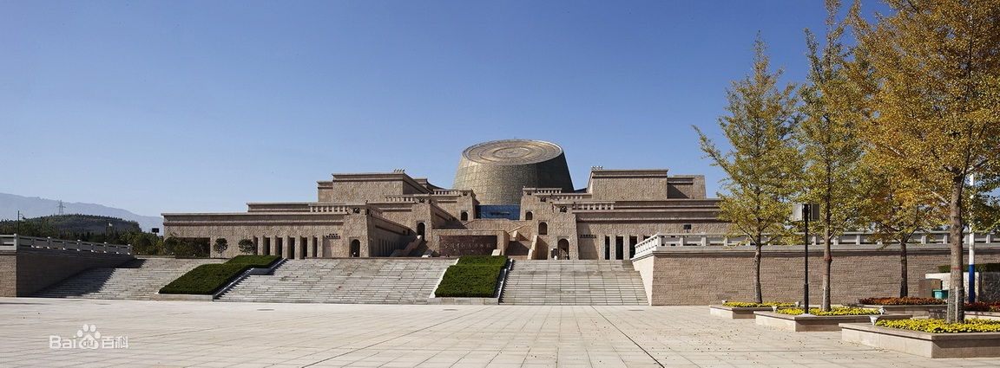

宝鸡的好去处
NO.1 青铜器博物馆
宝鸡青铜器博物院（China Bronze Ware Museum）原为宝鸡历史文物陈列室，始建于1956年，国家一级博物馆。位于宝鸡市滨河南路石鼓山上的中华石鼓园内的新馆2010年落成，为中国最大的青铜器博物馆.新馆馆舍用青铜器出土的场景作为建筑造型，建筑面积3.48万平方米，馆藏文物12000余件（组），其中一级文物120余件，包括何尊、折觥、厉王胡簋、墙盘、秦公镈等禁止出境文物。
NO.2 法门寺
法门寺（Famen Temple），又名“真身宝塔”，位于炎帝故里、青铜器之乡——宝鸡市，全国重点文物保护单位。据传始建于东汉明帝十一年（公元68年），约有1900多年历史，素有“关中塔庙始祖”之称，周魏以前称作“阿育王寺”，隋文帝时改称“成实道场”，唐高祖时改名“法门寺”。法门寺被誉为皇家寺庙，因安置释迦牟尼佛指骨舍利而成为举国仰望的佛教圣地。法门寺佛塔被誉为“护国真身宝塔”。寺庙所在的法门寺文化景区为国家AAAAA级旅游景区。法门寺地宫是迄今所见最大的塔下地宫。宝鸡法门寺地宫其出土了释迦牟尼佛指骨舍利、铜浮屠、八重宝函、银花双轮十二环锡杖等佛教至高宝物，法门寺珍宝馆拥有出土于法门寺地宫的两千多件大唐国宝重器，为世界寺庙之最。2014年10月16日，第27届世界佛教徒联谊会在宝鸡法门寺举行。2018中国西北旅游营销大会暨旅游装备展上，入围“神奇西北100景”榜单。
NO.3 望鲁台

望鲁台是孔子弟子燕伋尊师孔子之地，位于宝鸡市千阳县境内。被称为“中华尊师第一台”。燕伋是七十二贤之一, 燕伋为人谦虚诚厚，很受孔子常识，深得其亲传。燕伋二次从鲁归里后，于公元前501年在渔阳设馆办学，有教无类，广收门徒，传播儒学，为秦陇、川、滇、宁、蒙、新等地培养了一大批人才，推动了当地的教育、经济、文化事业的巨大发展。燕伋是西北大地上孔子唯一贤徒，"开西秦设馆教学之先河"，在弘扬民族文化、传承儒家学说等方面做出了巨大贡献。燕伋在渔阳设教的18年间，因思师心切，便每日在学堂后面的黄土塬边，登高远望鲁国。为了能站得更高望得更远，燕伋日用衣襟撩土垫足登高以望鲁，日复一日，年复一年，遂形成了一锥形土台，这个土台后世人称"望鲁台"或"燕伋望鲁台"。
NO.4 千湖国家级湿地公园
陕西千湖湿地省级自然保护区地处宝鸡市千阳县境内，总面积7168公顷，保护区于2006年11月经陕西省人民政府批准设立，主要目的是保护珍稀水禽、湿地生态系统和进行水源地保护，同时开展科研、宣教和科普型生态旅游。陕西千湖湿地省级自然保护区是以珍稀水禽保护动物及湿地生态系统为保护对象的内陆湿地和水域生态系统类型的自然保护区。 陕西千湖湿地省级自然保护区的建立，对于保护水源地及渭北黄土高原典型湿地景观具有重要作用。
截止到2010年，陕西千湖湿地省级自然保护区内有湿地内有陆生脊椎动物5纲27目47科174种，其中湿地鸟类14目24科81种，水禽41种，国家Ⅱ级重点保护鸟类如大天鹅、灰鹤等，有省重点保护并列入《中日候鸟保护协定》名录中的白鹭、豆雁、针尾鸭、绿翅鸭、花脸鸭、赤膀鸭、赤麻鸭等，且种类较多，数量较大；哺乳类5目8科24种，两栖爬行类3目8科21种。其次还有丰富的鱼类资源如有秦岭细鳞鲑、马口鱼、拉氏鱼岁、鲤、鲫等共5目7科48种，水生生物十分丰富。良好的自然资源为水禽栖息提供了丰富的食物资源，每年冬季在此栖息的有雁、鸭、鹭等多种鸟类。陕西千湖湿地省级自然保护区的建立，对于保护水源地及渭北黄土高原典型湿地景观具有重要作用。可更加有效地保护子午岭森林生态系统并维护其在水土保持、水源涵养、气候调节、防沙南侵等方面具有的重要作用。陕西千湖湿地省级自然保护区生态系统独特，生态功能重要，是集河流湿地、库塘湿地、沼泽湿地特征于一体，西北地区典型的黄土高原湿地。陕西千湖湿地省级自然保护区具有维护湿地生物多样性、涵养清洁水源、协调区域可持续发展等多种功能。
2015年10月31日上午，千湖国家湿地公园·长安画派艺术研究院创作中心暨赵振川美术馆开馆仪式在千阳县千湖国家湿地公园亲水湾景区隆重举行，同时，赵振川师生书画展开幕。来自全国各地的书画名家、美术理论家、评论家等嘉宾及新闻媒体记者约300多人出席开馆、开幕仪式。
 左图为赵振川画作 右图为其为千阳县燕伋小学题写的校名
左图为赵振川画作 右图为其为千阳县燕伋小学题写的校名